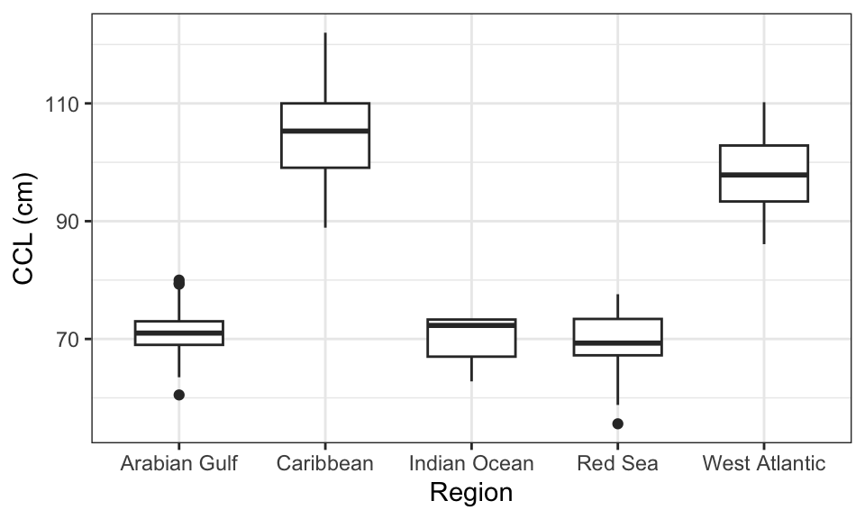
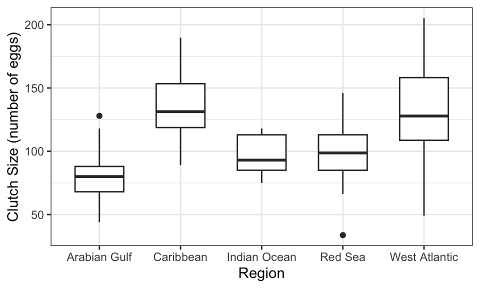
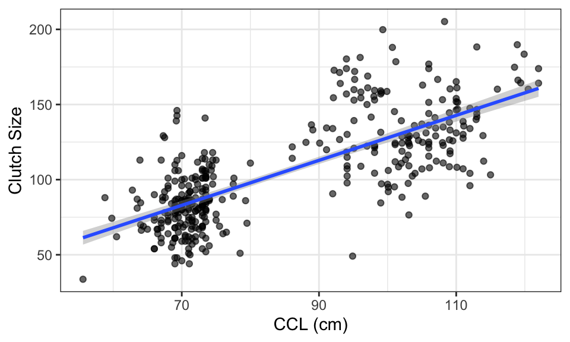

Tidyverse and ggplot2 Review: Reproducing Ecological Findings Using a Case Study of Hawksbill Turtle Nesting
1 Why the Tidyverse Matters
In computational statistics, the tidyverse provides a consistent framework for working with data from cleaning to visualization. The tidyverse is a collection of R packages designed for data science that share a consistent structure and philosophy. Rather than treating data analysis as a series of disconnected steps, the tidyverse provides a unified workflow for importing, cleaning, transforming, and visualizing data.
A central idea is that data analysis should be:
- Readable (easy to interpret)
- Reproducible (others can recreate your work)
- Structured (data follows consistent rules)
The tidyverse is built around the concept of tidy data:
- Each variable is a column
- Each observation is a row
- Each value is a single cell
This is important because maintaining this structure makes it much easier to apply functions and create visualizations. This matters because messy data (e.g. multiple variables in one column or inconsistent formatting) makes analysis harder and more error-prone. Converting data into tidy format is the most important preceding step in the workflow of data analyzation.
1.1 Data Manipulation with Dyplr
The package dplyr is used to manipulate and summarize data.
Key functions within dplyr include:
- filter() # keep specific rows
- select() # keep specific columns
- mutate() # create new variables
- rename() # rename columns
- count() # group by one or more variables and count the number of observations
- group_by() # define groups
- summarize() # compute summary statistics
Pipes:
|> This symbol is called a pipe, and connects lines of code to each other while using the tidyverse. Rather than continuously updating a tibble (tidyverse version of a data frame) in individual steps, you can connect these acts together using pipes.
1.2 Data Reshaping with Tidyr
The package tidyr helps convert messy data into tidy format.
- pivot_longer() # wide: long format
- pivot_wider() # long: wide format
These functions are usesful for reshaping tibbles for readibility, and making them easier to perform other tidyverse tools on.
2 Why ggplot Matters
The package ggplot2 is used for creating visualizations based on the grammar of graphics. This means plots are built in layers:
Core components:
- Data # the dataset you are drawing from
- Aesthetics (aes) # mappings (x, y, color, etc.)
- Geoms # visual elements (points, bars, lines -> what kind of graph you want to make)
- Labels: # titles and axis descriptions
Some common geoms:
- geom_point() # scatterplots
- geom_boxplot() # boxplots
- geom_col() # bar charts
- geom_smooth() # regression lines
- geom_violin() # violin plots
- geom_histogram() # histograms
3 Why These Tools Matter for This Project
In this analysis I will be doing, the tidyverse allows for:
- Efficient cleaning of ecological data from a published study
- Clear transformation and grouping of variables by region
- Reproducible workflows using pipe (|>) syntax
Meanwhile, ggplot2 enables:
- Recreation of published figures
- Clear comparison across global regions
- Visualization of relationships
Together, these tools make it possible to move from raw data to meaningful conclusions in an organized and interpretable fashion. Overall, the tidyverse and ggplot2 provide a powerful framework for turning complex, real-world datasets into clear and effective analyses, which is essential in both statistics and applied research.
4 The Dataset
The data comes from a study examining hawksbill turtle nesting patterns in the Arabian Gulf. Researchers were interested in whether turtles in this extreme environment differ in size and reproductive behavior compared to global populations.
We will focus on variables such as: - Curved Carapace Length (CCL) - Curved Carapace Width (CCW) - Clutch size (number of eggs)
In this article, I will demonstrate this workflow using real ecological data on hawksbill sea turtles, a critically endangered species, using published data from PLOS ONE. I recreate several published figures from the article and explore the relationship between turtle size and reproductive output. The goal is not just to analyze the data, but to show how tools like dplyr and ggplot2 can help us think statistically.
4.1 Loading and Inspecting the Data
After loading the dataset, it is important to inspect its structure and identify potential issues. Real-world datasets are rarely perfectly formatted for analysis, and this dataset contains missing values and unclear column names that must be addressed before visualization or modeling.
4.2 Cleaning the Data
Explanation of Cleaning Steps:
- Removing missing values (drop_na()):
- Observations with missing values were removed to prevent errors in summary statistics and regression models. Since variables like CCL and clutch size are central to the analysis, incomplete rows would reduce accuracy.
- Renaming variables (rename()): Column names were made more descriptive to improve readability and make plots easier to interpret.
After cleaning, the dataset is better structured for analysis: each row represents a single observation, and each column represents a clearly defined variable. This aligns with tidy data principles and ensures an easier time later using visualization tools like ggplot2.
5 Recreating Figures using ggplot2
Here are my recreations of their figures (2, 3, 5) using ggplot2 tools for data visualizations and accompanied numerical summaries.
5.1 Figure 2
Code

| Region | mean.ccl | median.ccl | sd.ccl | iqr.ccl | skew.ccl | e.kurt.ccl | n.ccl |
|---|---|---|---|---|---|---|---|
| Arabian Gulf | 70.93 | 71.00 | 3.01 | 4.00 | -0.04 | 0.99 | 181 |
| Caribbean | 104.85 | 105.30 | 7.37 | 10.93 | 0.11 | -0.46 | 124 |
| Indian Ocean | 70.04 | 72.30 | 4.31 | 6.30 | -0.68 | -1.47 | 9 |
| Red Sea | 69.17 | 69.30 | 5.37 | 6.17 | -0.76 | 0.04 | 26 |
| West Atlantic | 97.92 | 97.85 | 6.34 | 9.50 | 0.16 | -0.79 | 38 |
The distribution of curved carapace length (CCL) varies noticeably across regions. Both the visualization and the summary statistics indicate that turtles in the Arabian Gulf tend to have a lower mean CCL (70.89) compared to other regions, while turtles in the Caribbean tend to have the largest mean CCL (104.85) compared to other regions. This supports the conclusion that hawksbill turtles in the Arabian Gulf are physically smaller than their global counterparts.
5.2 Figure 3
Code

| Region | mean.clutch | median.clutch | sd.clutch | iqr.clutch | skew.clutch | e.kurt.clutch | n |
|---|---|---|---|---|---|---|---|
| Arabian Gulf | 79.31 | 80.00 | 16.50 | 20.00 | 0.19 | -0.31 | 181 |
| Caribbean | 135.08 | 131.30 | 23.52 | 34.65 | 0.26 | -0.69 | 124 |
| Indian Ocean | 97.22 | 93.00 | 15.78 | 28.00 | -0.02 | -1.80 | 9 |
| Red Sea | 99.83 | 98.70 | 26.55 | 28.05 | -0.12 | -0.20 | 26 |
| West Atlantic | 132.50 | 127.85 | 35.41 | 49.55 | 0.03 | -0.53 | 38 |
Clutch size also shows clear regional differences. The Arabian Gulf exhibits a lower mean clutch size (78.37), indicating reduced reproductive output relative to other populations. The relatively small spread (sd=16.55, iqr=20.00) in the data suggests that this is a consistent pattern rather than a result of a few unusually small clutches. Together, the numerical summaries and visualization reinforce the idea that turtles in this region produce fewer eggs, which may have important implications for population sustainability.
5.3 Figure 5
Code

| n | corr |
|---|---|
| 378 | 0.74 |
The scatterplot and regression line indicate a positive relationship between curved carapace length (CCL) and clutch size. This relationship is supported by the positive Pearson correlation coefficient (0.74), which quantifies the strength of the linear relationship between the two variables. Although the relationship is not perfectly strong, the trend suggests that larger turtles tend to produce more eggs on average. This aligns with the orignal study’s expectations that body size is linked to reproductive capacity, and helps explain some of the regional differences observed in earlier figures (2, 3).
6 Statistical Methods Used
To formally compare differences across regions, the original study used Analysis of Variance (ANOVA). This method tests whether the means of a variable (such as CCL or clutch size) differ significantly across multiple groups. Rather than comparing regions pairwise, ANOVA evaluates all groups simultaneously to determine if at least one group mean is different.
In this analysis, the visual differences observed in Figures 2 and 3 (CCL and clutch size across regions) are consistent with what ANOVA is designed to detect: systematic differences in group means rather than random variation. However, these visualizations created with ggplot2 are much clearer and more effective than those made using ANOVA.
Then, to examine the relationship between turtle size and reproductive output, linear regression was used. Linear regression models the relationship between an independent variable (CCL) and a response variable (clutch size), allowing us to estimate how changes in body size are associated with changes in reproductive output.
This relationship was further summarized using the Pearson correlation coefficient, which quantifies the strength and direction of the linear association between the two variables. The positive correlation observed supports the trend shown in the regression plot: larger turtles tend to produce more eggs.
Together, towards this study, these statistical methods complement the visualizations by providing a formal framework for interpreting differences between regions and relationships between variables.
7 Reflection
This project exemplifies how raw ecological data is transformed into meaningful statistical conclusions. The most important skills I used were structuring and interpreting real-world, messy data using tidyverse and visualizing the data after using ggplot2
Rather than thinking of plots as final outputs, I have learned, through this course, to use them as tools for exploring patterns in the data. In this case, plots were used to examine differences between regions and relationships between variables.
Most importantly, I have learned that statistical analysis is more than computing numbers. Visualization and numerical summaries work together to support interpretations, and both are necessary for drawing clear and convincing conclusions from data.